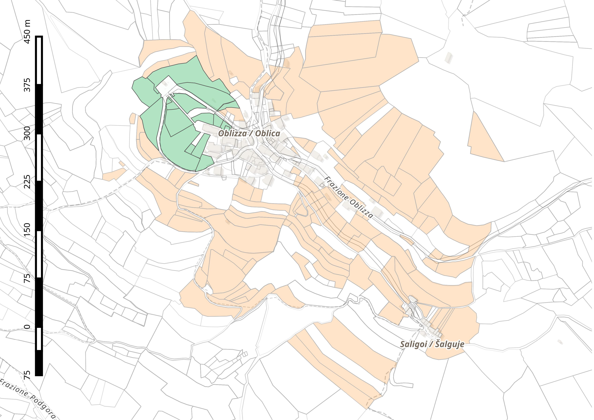

La programmazione 2021-2026 dell'ASFO Erbezzo e l'obiettivo della castanicoltura nelle Valli del Natisone
dott. Luca Postregna, sindaco di Stregna
www.asfoerbezzo.eu - info@asfoerbezzo.eu
La castanicoltura nelle Valli del Natisone a partire dall'esperienza dell'ASFO Erbezzo, ciclo di incontri, Stregna 26 aprile 2021

Qual'è il problema paesaggistico nelle Valli del Natisone?
ABBANDONO
catasto nel comune di Stregna
- 1904 ettari di superficie
- 0.24 ettari è la media sup. per particella
- 99% è proprietà privata
studio (DISAFA e Comp. San Paolo, Torino, 2016)
- superficie: 36ha
- n. particelle: 330
- superficie media: 0.11ha
proprietari:
- 225 totale
- 19% residenti
- 81% non residenti
particelle:
- 77% con almeno 1 proprietario non residente
- 52% senza proprietari residenti
Dov'è nata l'associazione fondiaria?
- Francia 1976, association fonciere pastoraux
- Italia 2012, Carnino (CN), ...
Cos'è l'associazione fondiaria?
- associazione di volontariato senza fini di lucro che raccoglie la delega dei soci a gestire i terreni e non li usucapisce
A che punto siamo nel 2021 con l'ASFO Erbezzo?
- 79 soci
- 426 particelle
- 71,9 ettari
- 6 contratti d'affitto nel 2020 (in aggior.)
ASFO Erbezzo a Stregna

ASFO Erbezzo ad Oblizza
ASFO Erbezzo a Tribil Superiore

recupero dei terreni incolti (ha):
| 2018 | 2019 | ||
|---|---|---|---|
| asfo erbezzo | 1.4 | 11.1 | |
| altri privati | 10.2 | 3.5 | |
| totale | 11.6 | 14.6 | 26.2 |
comune di Stregna e ASFO Erbezzo hanno in previsione di recuperare ulteriori 24 ettari di terreni incolti entro il 2024
A fine 2020:
- abbiamo avuto una crisi di crescita
- necessità di strutturare la programmazione delle attività a medio termine
Da dicembre 2020 abbiamo organizzato 10 incontri con la partecipazione di:
- direttivo ASFO Erbezzo + soci
- giunta comunale di Stregna
- portatori di interesse esterni (UniUD, UniPD, Kmečka Zveza, ...)
È stato definito un programma 2021-2026:
- VISION: espandiamo il modello dell'associazione fondiaria per lo sviluppo agricolo e la crescita sostenibile del territorio
- MISSION: contrastiamo l'abbandono del territorio e valorizziamo il paesaggio identitario delle Valli del Natisone
Gestiamo i prati, i pascoli, i castagneti ed il bosco non solo per legno da riascaldamento:
- la filiera zootecnica è ben sviluppata
- la filiera dell'elemento identitario del castagno è valorizzata
- i nostri terrazzamenti sono curati
- il legname dei boschi è certificato e di alta qualità
Siamo organizzati internamente, gestiamo bene i rapporti con i soci e sensibilizziamo e formiamo gli altri circa le nostre attività ed i risultati che otteniamo:
- abbiamo visioni interdisciplinari ampie integrate
- abbiamo aumentato la consapevolezza dell'associazione e delle sue finalità
- le adesioni all'associazione crescono, sia all'interno del Comune di Stregna che all'esterno
- conosciamo le opportunità presenti sul territorio e collaboriamo con loro
Il processo partecipativo è aperto ad ogni portatore d'interesse
Proposta di legge regionale n. 130/2021
modifiche alla finalità ed ai principi della LR 10/2010:
- a) di promuovere e stimolare il risanamento, il recupero e il successivo mantenimento, anche per finalità agricole, con particolare riferimento alle attività zootecniche, all'agricoltura di montagna, alla castanicoltura da frutto ed alle altre colture legnose, dei terreni incolti e/o abbandonanti mediante gli interventi di cui all'articolo 2;
Proposta di legge regionale n. 131/2021
Norme per favorire interventi di ripristino, recupero, manutenzione e salvaguardia dei castagneti
Come seguire le nostre attività?
ma anche:
La programmazione 2021-2026 dell'ASFO Erbezzo e l'obiettivo della castanicoltura nelle Valli del Natisone
dott. Luca Postregna, sindaco di Stregna
www.asfoerbezzo.eu - info@asfoerbezzo.eu
La castanicoltura nelle Valli del Natisone a partire dall'esperienza dell'ASFO Erbezzo, ciclo di incontri, Stregna 26 aprile 2021